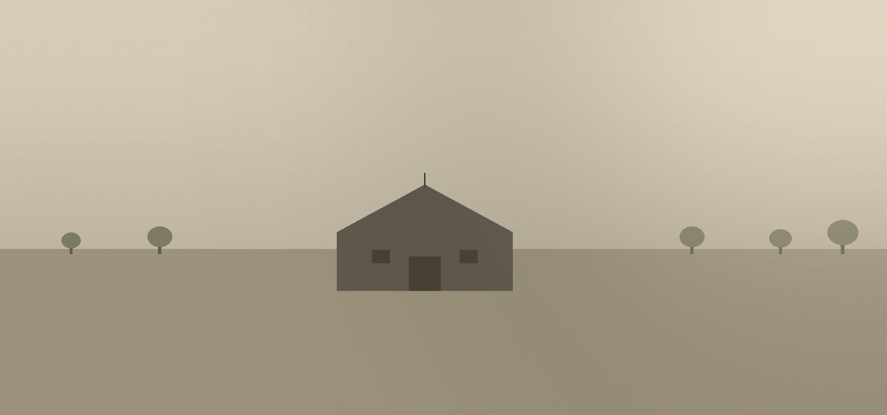

Die Praxis
Eine umgebaute Scheune in ruhiger Lage – ein Ort, an dem Therapie atmen kann.

Die Praxis liegt auf dem Kamphof – einer liebevoll umgebauten ehemaligen Scheune in Krefeld-Verberg.
Ein behindertengerechter Zugang ist vorhanden. Die Praxis ist ohne Treppen erreichbar.
Parkplätze stehen direkt vor der Praxis kostenlos zur Verfügung.
Wir sind eine Praxengemeinschaft bestehend aus weiteren Psychotherapeuten.
Vereinbaren Sie ein Erstgespräch – persönlich, telefonisch oder per Mail.
Kontakt aufnehmen